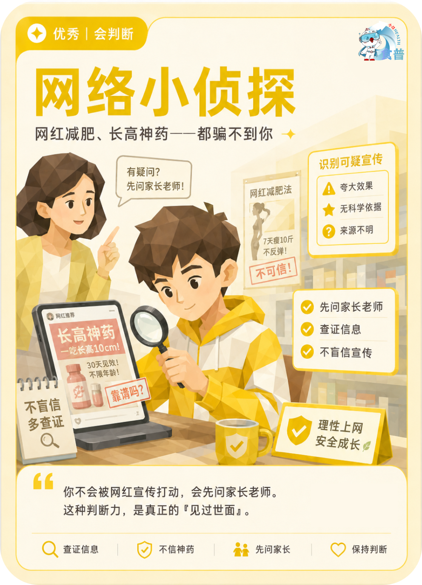

青少年与儿童
优秀
会判断
K05
网络小侦探
网红减肥、长高神药——都骗不到你
你不会被网红宣传打动,会先问家长老师。这种判断力,是真正的「见过世面」。
手机端可点击“打开原图”后长按图片保存；也可以直接长按上方图卡保存。

网红减肥、长高神药——都骗不到你
你不会被网红宣传打动,会先问家长老师。这种判断力,是真正的「见过世面」。
手机端可点击“打开原图”后长按图片保存；也可以直接长按上方图卡保存。